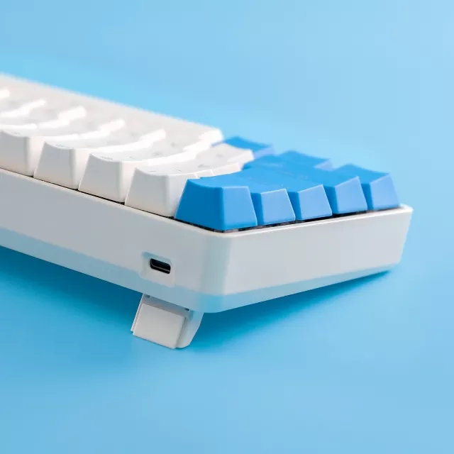
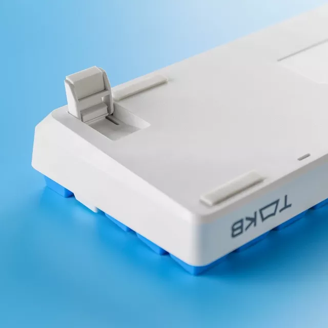
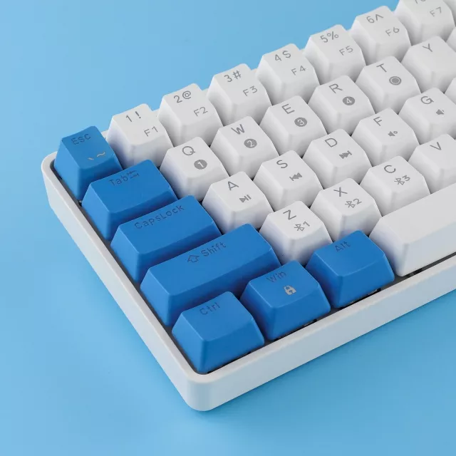

Taille compacte et excellente qualité de construction
Offrant le meilleur exemple d'utilisation efficace de l'espace, le GK61 a une conception compacte à 61 touches en conservant les touches fonctionnelles essentielles comme Gauche/Droite, Haut/Bas qui sont importantes pour votre productivité. Vous offrant tellement plus d'espace que les claviers de jeu normaux. Le clavier à switchs mécanique RVB est livré avec des touches moulés par double injection offrant un rétro-éclairage uniforme cristallin et un lettrage qui ne se raye pas.
Deux modes filaires et sans fil
Conçu pour la polyvalence, le GK61 se connecte via Bluetooth ou avec un câble de type C. Connectez-vous sans fil jusqu'à trois appareils à la fois et basculez entre les écrans pour un multitâche efficace et une productivité accrue. Vous pouvez également utiliser notre câble type C pour connecter le clavier mécanique à vos appareils.

Batterie intégrée de 1900 mAh
Les utilisateurs profitent de jusqu'à 8 heures d'écriture avec une seule charge. Le clavier Bluetooth GK61 dispose d'une batterie lithium-ion rechargeable. Le temps de veille est jusqu'à 280 heures. S'il est éteint, vous pouvez passer en mode USB.

Clavier mécanique rétroéclairé RVB
Le clavier à 60 % dispose de 7 couleurs de rétroéclairage : rouge/vert/bleu/jaune/violet/blanc/vert clair/blanc et 8 effets lumineux RVB (y compris le mode réactif, le mode vague, le mode ondulation, le mode aurore , etc.) dont vous pouvez facilement changer l'effet d'éclairage avec 'FN + /'. Cet effet RVB préprogrammé vous donnera plus de plaisir lorsque vous jouez ou tapez la nuit.

Lien vers Amazon si vous souhaitez l'acheter:Cliquez ici.